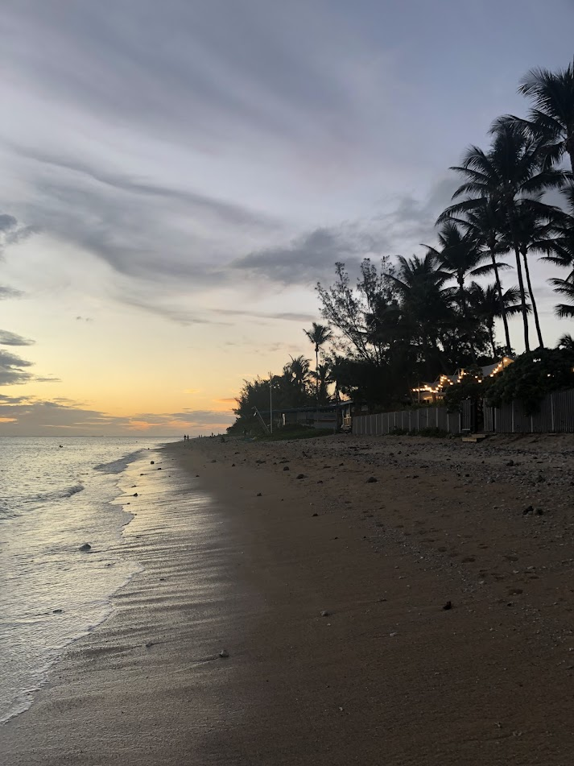
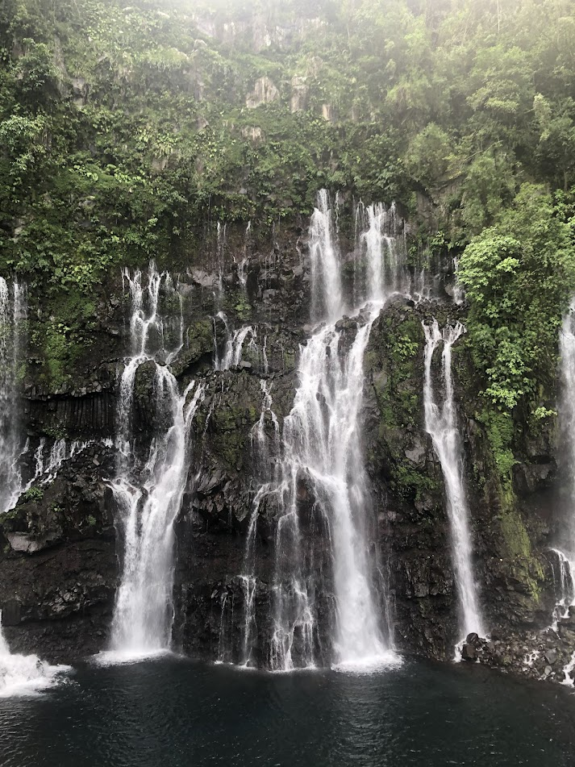
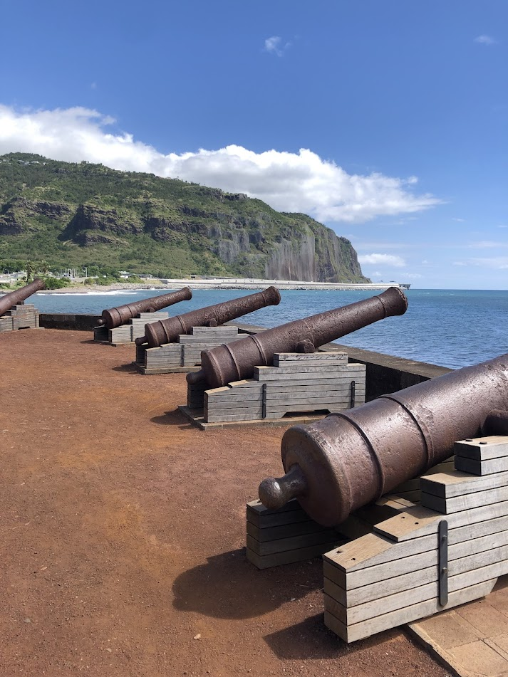
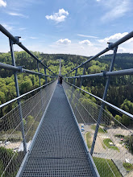
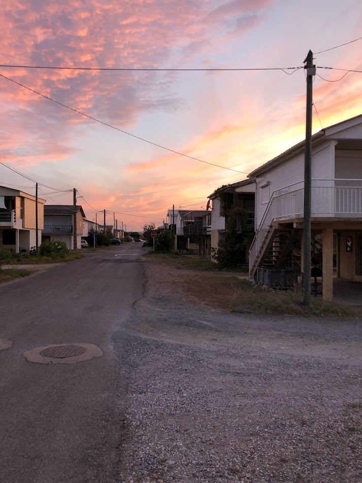
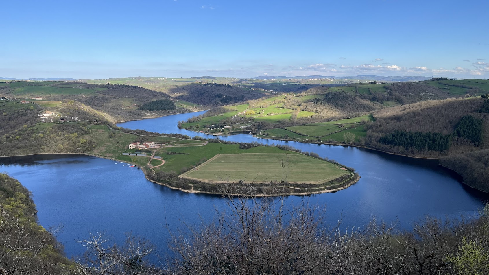
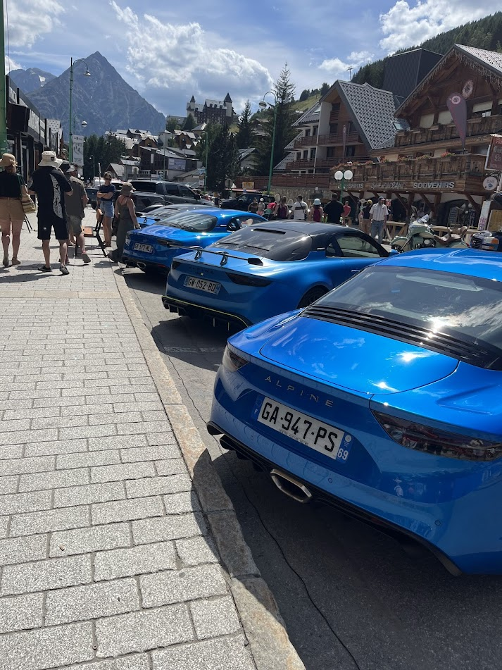
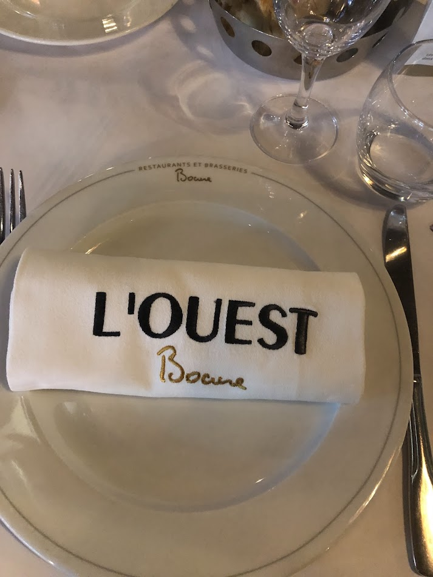
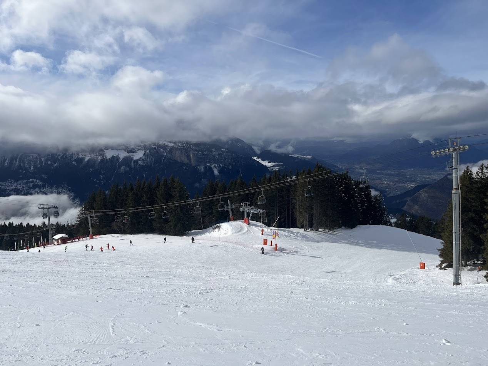

✈️ Passion Voyages
Mon Amour des Voyages
Les voyages sont ma passion. J'aime explorer de nouvelles horizons, découvrir des cultures variées, emprunter les plus belles routes d'Europe, goûter des cuisines d'exception et créer des souvenirs inoubliables. De la montagne à la mer, de l'Allemagne à la Méditerranée, du ski à la gastronomie — chaque voyage enrichit mon expérience de vie.
Destinations Favorites
�️ La Réunion — L'Incroyable
Une destination d'exception qui m'a marqué. Paysages volcaniques incontournables, biodiversité tropicale extraordinaire, cultures riches et diversité humaine. Une expérience qui restera gravée à jamais.
🇩🇪 Allemagne — Road-Trip Découverte
Plusieurs visites inoubliables à travers l'Allemagne : Dortmund et ses grandes routes, Salzkotten avec ses routes pittoresques, Willigen avec le pont suspendu spectaculaire, et Paderborn pour assister à l'inauguration du nouvel aéroport. Atmosphère allemande authentique, précision routière et hospitalité.
🇫🇷 Sud de la France — Méditerranée
La côte méditerranéenne française m'appelle régulièrement : Nice avec ses promenades côtières, Fréjus et son charme antique, Gruissan et sa côte sauvage, Saint-Pierre-de-la-Mer avec ses petites plages tranquilles. Soleil, mer turquoise, gastronomie locale et routes côtières panoramiques.
🏔️ Les Alpes Françaises — Montagne & Ski
Plusieurs stations de montagne me fascinent : Risoul et ses vues panoramiques, Les Orres avec ses domaines skiables, Les Carroz-d'Arâches pour des journées de ski inoubliables. Routes alpines sinueuses, paysages spectaculaires, et adrénaline garantie.
🍽️ Restaurants Gastronomiques & Brasseries Bocuses
Au-delà des routes, les vrais voyages passent par la gastronomie. Je suis un fervent admirateur de l'héritage du Chef Paul Bocuse. Les restaurants étoilés et les brasseries Bocuses sont des destinations en soi — temples de la tradition française, innovation culinaire, et passion du bien-manger. Chaque repas est une aventure.
Expériences Culinaires
Pour moi, voyager c'est aussi (et surtout) découvrir la gastronomie locale. J'adore :
Bucket List Voyages
Destinations et expériences que je rêve de vivre :
✈️ Japon — Gastronomie, culture, paysages contrastés
✈️ Nürburgring Track Day — Conduire une Porsche sur le circuit légendaire
✈️ Canada / Rocky Mountains — Road-trip nature épique
✈️ Islande — Cascades, geysers, routes désertiques
✈️ Circuit Spa-Francorchamps — Vivre un événement motorsport
✈️ Monaco — Grand Prix F1 + Luxe urbain
Galerie de Voyages












Mon Philosophie de Voyage
"Travel is the only thing you buy that makes you richer"
Je ne voyage pas pour remplir un Instagram, mais pour vivre des moments authentiques,
créer des souvenirs inoubliables et me rapprocher de mes passions (route, cuisine, nature).
Chaque voyage me façonne et m'inspire dans mes projets futurs.